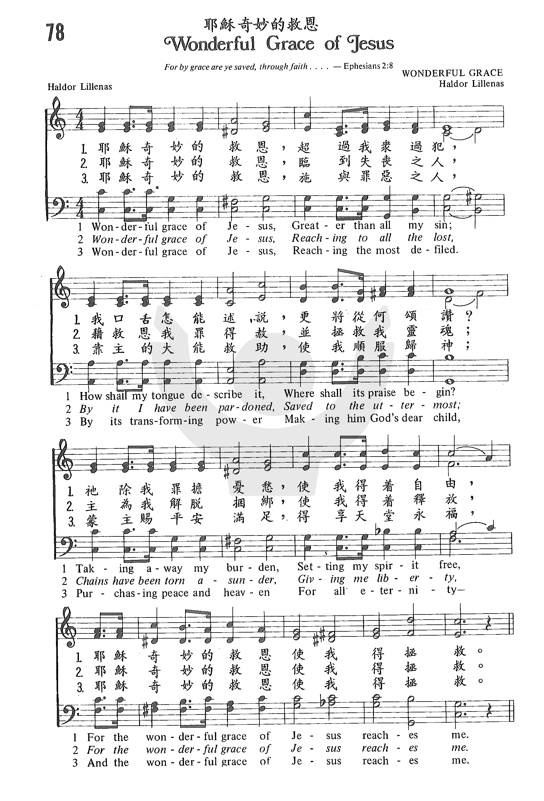
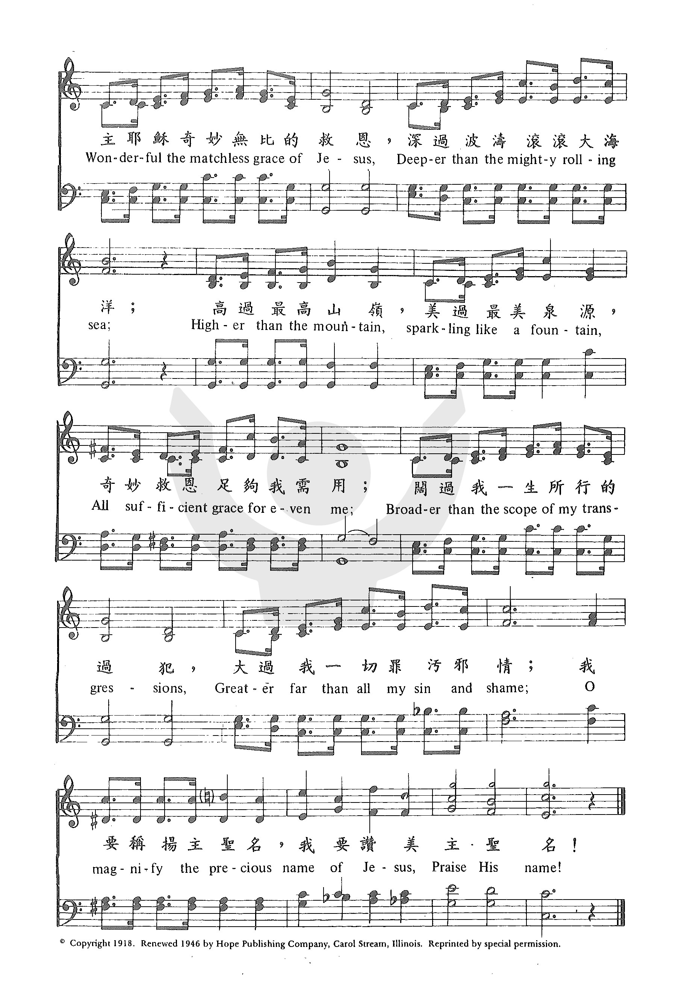

|
|
|
|
1 Wonderful grace of Jesus, Refrain: 2 Wonderful grace of Jesus, |
“078b 耶穌奇妙的救恩 WONDERFUL GRACE OF JESUS.mp3” by DOW YOUNG.
Genre: Other. |
|
https://www.zanmeishige.com/tab/25400.html?songbook=1&index=78

 |
|
|
|
|

耶穌奇妙的救恩 Wonderful Grace of Jesus - 第三屆聖詩頌唱會 https://youtu.be/YtrxZ2v2xVg -
Wonderful Grace Of Jesus https://youtu.be/t0OXi6JIJRE
| Text: | Wonderful Grace of Jesus |
| Author: | Haldor Lillenas |
| Tune: | [Wonderful grace of Jesus] |
| Composer: | Haldor Lillenas |
Tune Information
| Title: | WONDERFUL GRACE (Lillenas) |
| Composer: | Haldor Lillenas (1918) |
| Meter: | Irregular |
| Incipit: | 55555 65134 54333 |
| Key: | C Major |
| Copyright: | Public Domain |
耶穌奇妙的救恩 Wonderful Grace of Jesus
耶穌奇妙的救恩，超過我眾過犯，
我口舌怎能述說，更將從何頌讚？
祂除我罪擔憂愁，使我得著自由，
耶穌奇妙的救恩，使我得拯救。
耶穌奇妙的救恩，臨到失喪之人，
藉救恩我罪得赦，並拯救我靈魂；
主為我解脫捆綁，使我得著釋放，
耶穌奇妙的救恩，使我得拯救。
耶穌奇妙的救恩，施與罪惡之人，
靠主的大能救助，使我順服歸神；
蒙主賜平安滿足，得享天堂永福，
耶穌奇妙的救恩，使我得拯救。
副歌
主耶穌奇妙無比的救恩，
深過波濤滾滾大海洋；
高過最高山嶺，美過最美泉源，
奇妙救恩足夠我需用；
闊過我一生所行的過犯，
大過我一切罪污邪情；
我要稱揚主聖名，
我要讚美主聖名！
本詩的詞曲都是李理納（Haldor
Lillenas,1885 –1959）所作。 他出生在挪威，童年隨父母移民來美，定居在俄勒根州。 在他4-14歲間，他們全家住在離城十三里的森林區，家中早晚有靈修。 星期天，偶而有牧師前來領會，但多數時，鄰居們聚集一起，唱詩、讀經、禱告、然後有一人讀一篇講章。李理納總是仰首以待末頁速速來到。 他沒有上過主日學，但父親經常以問答的方式教他們聖經。 十五歲時，他在信義會受堅振禮。 母親過世後，家中失去了溫暖，他離家去一農場工作。 海濱垂釣，林間拾殘枝都不能消除他內心的悲傷和空虛。
兩週後，他在一次的佈道會中決志奉獻，他的生命經歷了驚人的改變。 他開始在各街頭佈道的工作中事奉。
1917年，他們在伊利諾州的一小鎮，首次自建一小屋，竣工時，已無餘款添置傢俱。 可是他們急需一架鋼琴和若干樂器，最後在附近的鄰居家，以五元美金購到了一台雜音重重的舊鋼琴，而許多聖詩都藉此琴完成，「耶穌奇妙的救恩」是其中之一，在1922年付梓。 雖然它是一首輕快活潑的聖詩，但李理納時常不滿會眾將此詩唱得過於快速，以至咬字不清。 他說：「唱聖詩必須字義清晰，從容不迫。」
1924年李理納在印第安州成立了李氏音樂公司，六年後與拿撒勒人出版社合併，他擔任音樂主編有廿年之久。 他一共寫了四千首聖詩，他是本世紀重要的聖詩作家之一。 1959年夏，拿撒勒人大學授予榮譽音樂博士學位，以表揚他對教會音樂的貢獻。
http://www.mbcsfv.org/chinese/library/hymncampanions/074.html
WONDERFUL GRACE OF JESUS hymnstudiesblog
“And the grace of our Lord was exceeding abundant with faith and love which is in Christ Jesus” (1 Tim. 1:14)
INTRO.:
A song which extols how wonderful the grace of our Lord Jesus is with faith and love is, “Wonderful Grace of Jesus” (#638 in Hymns for Worship Revised, #452 in Sacred Selections for the Church). The text was written and the tune (Wonderful Grace) was composed both by Haldor Lillenas, who was born on November 19, 1885, at Stord Island, near Bergen, Norway, the son of Ole Paulsen Lillenas and his wife Anna Marie Lillenas. Ole was a farmer and storekeeper; Haldor’s siblings were named Paul, Johanes, Katrine, and George. The Lillenas family farm was sold to allow the family to migrate to the United States. Ole came to the States via Canada in 1886 and bought a farm in Colton, SD. Anna and the children were re-united with him in 1887. In 1889 the Lillenas family relocated to a farm on the Columbia River near Astoria, OR. While living in Astoria, Lillenas learned English and began to attend school. In 1900 the family moved again to Roseville Township, Kandiyohi County, MN. While in Roseville, Lillenas began attending high school in a Lutheran school at Hawick, MN. At the age of seventeen, Lillenas began a four-year correspondence course from the International Correspondence Schools in chemistry and chemical analysis with private tutors, working as a farm laborer most of the year, but during winter concentrating on his studies. About 1906 Anna Marie Lillenas died, and Ole decided to return the family to North Dakota; however Haldor decided to move back to Astoria, OR, where he finished his correspondence course and found employment in a chemical factory.
Like many Scandinavians at that time, Lillenas was raised in a Lutheran family. In 1906 Lillenas began to attend meetings at the Peniel Mission, a holiness rescue mission, in Astoria. One summer evening he paused to listen to a street corner service and made his decision then to devote his life to Christian service. In 1907 Lillenas moved to Portland, Oregon, where he worked with the Peniel Mission located there. In 1908 Lillenas became a member of the Portland First Church of the Nazarene. Soon after he enrolled in the ministerial course of studies, which he began by correspondence, joined a vocal group called the “Charioteers’ Brigade,” which held street meetings and revival services. In 1909 Lillenas was able to continue his ministerial studies at the Deets Pacific Bible College, now Point Loma Nazarene University, located at Los Angeles, CA. Additionally, during this time he studied voice at the Lyric School of Music in Los Angeles. While at Deets College, Haldor met another student, Bertha Mae Wilson, and on October 4, 1910, Lillenas married Bertha Mae, who became a songwriter like himself. They had two children, Evangeline Mae and Wendell Haldor. Lillenas was a minister for the Church of the Nazarene for fifteen years from 1910. Soon after his marriage, he and Bertha moved to Sacramento, CA, where they took charge of the Peniel Mission. After a year, Lillenas became the minister of the Lompoc, CA, Church of the Nazarene. During this time, he also took a two-year course in composition and harmony from the Siegel-Myers University Correspondence School of Music. For ten years Lillenas was also a song evangelist and travelled with Bertha Mae holding revival services. In addition, he provided songs for such meetings conducted by himself and others. He subsequently worked with churches in Pomona, CA; Redlands, CA; Auburn, IL; Peniel, TX; and, from 1923 to 1926, Indianapolis, IN. From a very young age, Lillenas had begun to write his own songs; however, it was not until later, that he attempted to have them published. Lillenas’ best known song is probably “Wonderful Grace of Jesus,” which he wrote during his time at the Church of the Nazarene in Auburn, IL, for use by evangelist Charles M. Alexander. This gospel song was copyrighted in 1918, but not published until 1922 in the Tabernacle Choir Book edited by R. J. Oliver and Lance Latham. Lillenas was paid $5.00 for it.
Lillenas was a prolific composer of hymns, and it is estimated that in his lifetime, he wrote some 4,000 hymns, and supplied songs for many evangelists. Lillenas was the editor and compiler of over fifty song books for church and Sunday School. Lillenas’ first book was Special Sacred Songs, which was published in 1919. In 1924, while still serving with the Indianapolis First Church of the Nazarene, Lillenas founded the Lillenas Publishing Company. He resigned from Indianapolis First Church to focus on his publishing house, Before Lillenas Publishing Company was sold to the Nazarene Publishing House in Kansas City, Missouri in 1930, more than 700,000 hymnals and song books were published and sold. The sale agreement mandated that Lillenas would serve as manager for ten years and then be reviewed. However, he continued as an editor until his retirement in 1950, at the age of 65. After his retirement, he served as an adviser to the music department of Nazarene Publishing House until his death. Among his other publications was the first official hymnal for the Church of the Nazarene, Glorious Gospel Songs, published in 1931, soon after Lillenas Publishing Company became part of the Nazarene Publishing House. It included about 700 hymns and gospel songs, of which 81 were of his own compositions. In 1938 Lillenas became a member of the American Society of Composers, Authors and Publishers (ASCAP). That same year Haldor and Bertha Mae purchased a 500-acre rural estate, that they called “Melody Lane,” in the Miller County, MO, Ozarks, halfway between Tuscumbia and Iberia. It was here that Bertha Mae died of cancer in March 1945, and that Lillenas married Lola Dell later that year. They remained there until they relocated to Pasadena, CA, by 1955. In 1941 Olivet Nazarene College awarded Lillenas an honorary Doctor of Music degree in recognition of his contributions to American hymnody. He died on August 18, 1959, at Aspen, CO, where the Lillenases had a summer retreat. In 1982 Lillenas was inducted into the Gospel Music Association Hall of Fame.
Among hymnbooks published by members of the Lord’s church for use in churches of Christ, “Wonderful Grace of Jesus” has appeared in the 1963 Christian Hymnal edited by J. Nelson Slater; the 1971 Songs of the Church, the 1990 Songs of the Church 21st C. Ed., and the 1994 Songs of Faith and Praise, all edited by Alton H. Howard; the 1978 Hymns of Praise edited by Reuel Lemmons; the 1978/1983 Church Gospel Songs and Hymns edited by V. E. Howard; the 1992 Praise for the Lord edited by John P. Wiegand; the 2009 Favorite Songs of the Church and the 2010 Songs for Worship and Praise both edited by Robert J. Taylor Jr.; and the 2017 Standard Songs of the Church edited by Michael Grissom; in addition to Hymns for Worship and Sacred Selections.
The song mentions three important aspects of God’s grace through Jesus.
I. Stanza 1 says that it is greater than all our sin
Wonderful grace of Jesus,
Greater than all my sin;
How shall my tongue describe it,
Where shall its praise begin?
Taking away my burden,
Setting my spirit free;
For the wonderful grace of Jesus reaches me.
The fact is that each of us has sinned: Rom. 3:23
But God by His grace makes it possible for our burden of sin to be taken away through justification: Rom. 5:15-17
In this way, the grace of Christ sets our spirits free: Rom. 8:1-2
II. Stanza 2 says that it reaches all the lost
Wonderful grace of Jesus,
Reaching to all the lost,
By it I have been pardoned,
Saved to the uttermost,
Chains have been torn asunder,
Giving me liberty;
For the wonderful grace of Jesus reaches me.
The gospel of God’s grace is His power of salvation to everyone: Rom. 1:16-17
Thus all who are lost can find pardon or forgiveness in Christ by grace: Eph. 1:7-8
Not only is this grace broad enough to save anyone but it is deep enough to save us to the uttermost: Heb. 7:25
III. Stanza 3 says that it reaches the most defiled
Wonderful grace of Jesus,
Reaching the most defiled,
By its transforming power,
Making him God’s dear child,
Purchasing peace and heaven,
For all eternity;
And the wonderful grace of Jesus reaches me.
This means that there is no single sin so defiling that it cannot be forgiven: Mk. 3:28
As a result, even the vilest sinner can be transformed by grace into God’s dear child: Gal. 3:26-27
And God’s grace gives us not only peace here but also the hope of heaven for all eternity: Col. 1:3-6
CONCL.
The chorus continues to express appreciation for the blessings of Christ’s grace
Wonderful the matchless grace of Jesus,
Deeper than the mighty rolling sea;
Wonderful grace, all sufficient for me, for even me.
Broader than the scope of my transgressions,
Greater far than all my sin and shame,
O magnify the precious name of Jesus.
Praise His name!
This is not the easiest song to sing, but it is a good song. There is a beneficial message about our salvation and about the exuberant joy available in Christ because of the “Wonderful Grace of Jesus.”
https://hymnstudiesblog.wordpress.com/2018/10/20/wonderful-grace-of-jesus/
A Hymn of Grace: Wonderful Grace of Jesus
March 1, 1997 by GES Webmaster in Journal Articles
KEITH W. WARD
Scientist
U.S. Environmental Protection Agency
Research Triangle Park, NC
Wonderful grace of Jesus, greater than all my sin;
How shall my tongue describe it, where shall its praise begin?
Taking away my burden, setting my spirit free,
For the wonderful grace of Jesus reaches me!
Wonderful grace of Jesus, reaching to all the lost,
By it I have been pardoned, saved to the uttermost;
Chains have been torn asunder, giving me liberty,
For the wonderful grace of Jesus reaches me!
Wonderful grace of Jesus, reaching the most defiled,
By its transforming power, making him God’s dear child.
Purchasing peace and heaven for all eternity;
And the wonderful grace of Jesus reaches me!
REFRAIN: Wonderful the matchless grace of Jesus,
Deeper than the mighty rolling sea;
Higher than the mountain, sparkling like a fountain,
All-sufficient grace for even me;
Broader than the scope of my transgressions,
Greater far than all my sin and shame;
O magnify the precious name of Jesus, praise His name!
—Haldor Lillenas (1885-1959)
“Wonderful Grace of Jesus”—the very title proclaims from the outset and at the
beginning of each stanza that this hymn by Haldor Lillenas is a hymn of grace.
First introduced in 1918, this song has become a favorite across denominational
lines in the Church today. Its upbeat, bouncy meter and somewhat unusual
refrain, which splits into two parts, with the melody alternating between the
bass/tenor and alto/soprano parts, endear the tune to many. However, as is often
the case, the strong doctrinal message carried by the words of the hymn are
often obscured in the enthusiasm for the music. In fact, the author himself, in
his autobiography, cautions against distorting the words of the hymn by
performing it at too rapid a tempo.1
Haldor Lillenas was born in Norway in 1855, but his family emigrated to America
when he was a young child.2 He was trained at Deets Pacific Bible College in Los
Angeles, and became a pastor in the Church of the Nazarene. He received his
musical training through personal study and correspondence courses. Eventually,
Lillenas would obtain more renown through his musical endeavors than through his
pastoral ministry. In 1925, while pastor of the First Church of the Nazarene in
Indianapolis, he founded the Lillenas Publishing Company, which was later
purchased by the Nazarene Publishing House, and became its music division. Over
his lifetime Lillenas wrote more than 4,000 hymn texts and tunes, many of which
are still in use today both by the Nazarene and by other denominations.
While at first glance “Wonderful Grace of Jesus” may seem to be simply a general
song of praise to God for His grace, several of its phrases make it clear that
the author understands not just the term but the substance of the grace of God.
In the first stanza and the chorus, the surpassing nature of God’s grace is set
forth with the phrases “greater than all my sin” and “Broader than the scope of
my transgressions, greater far than all my sin and shame” (Rom 5:20). It is
grace, Lillenas proclaims, that takes away the burden of sin and liberates the
captive soul.
In the second stanza, Lillenas demonstrates his understanding of the extent of
God’s grace. Not covering just a favored few, the grace of God reaches to “all
the lost.” People may choose to reject grace, but God extends the offer of
salvation freely to all (Titus 2:11). Also in this stanza, and again in the
chorus, the sufficiency of grace is described. Lillenas says he has been “saved
to the uttermost” by an “all-sufficient grace.” Lillenas’s view of salvation by
grace is not one of meeting God halfway, with both parties contributing to the
transaction (Titus 3:5; Eph 2:8). His words here indicate an understanding that
when Christ completed His work on the cross, salvation was finished (John
19:30), leaving nothing for man to do but accept the gift of grace and be
completely saved.
The third stanza touches on another hallmark of the doctrine of grace—that
regardless of the magnitude of one’s sin, God’s grace is available and is
sufficient for salvation even to “the most defiled.” This is reminiscent of
Fanny Crosby’s words in “To God be the Glory”3 when she wrote “The vilest
offender who truly believes, that moment from Jesus a pardon receives.”
The words of this third stanza may strike some as inconsistent with Lillenas’s
Nazarene theology. While members of GES generally recognize that ultimate
sanctification will occur only in the presence of the Lord in Heaven, Nazarene
theology teaches a doctrine of “entire sanctification,” in which the believer
can and should obtain complete sanctification in this life.4 Connected to this
doctrine is the Nazarene teaching that apostasy in the life of a believer can
result in the loss of salvation. Thus, for the Nazarene, there is no true
doctrine of eternal security, as promulgated by GES. This makes Lillenas’s words
in the third stanza even more interesting, when he writes “Purchasing peace and
heaven for all eternity,” and even in the second stanza where he tells us that
we have been “saved to the uttermost” (italics added). While these words may
have meant something quite different to Lillenas, they seem equally applicable
to our understanding of God’s grace in salvation, sanctification, and security.
“Wonderful Grace of Jesus” combines doctrinal truth with a buoyant melody and
serves as a good vehicle for teaching the doctrine of grace. It touches on the
availability, sufficiency, and efficacy of the salvation offered by grace
through faith in Christ, and so carries an appropriate message for believer and
unbeliever alike. Though we should be aware that Lillenas’s own theology may not
line up completely with that of most GES readers , his words do carry the Gospel
of grace, making this hymn worthy of the category “Hymn of Grace.”
Endnotes
1Paul G. Hammond, “Wonderful Grace of Jesus,” in Handbook to The Baptist Hymnal
(Nashville: Convention Press, 1992), 277-78.
2Hammond, “Lillenas, Haldor,” Ibid., 387.
3Reviewed in JOTGES (Spring 96), 97-99.
4Manual (1993-1997), Church of the Nazarene, (Kansas City: Nazarene Publishing
House, 1993), 26-45.
https://faithalone.org/journal-articles/a-hymn-of-grace-wonderful-grace-of-jesus/